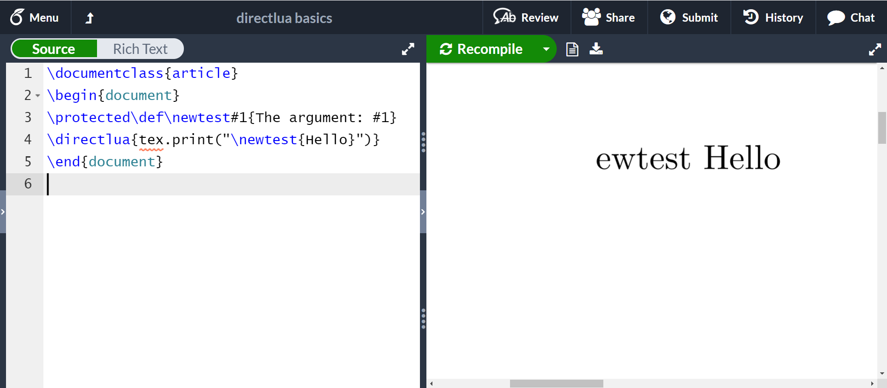
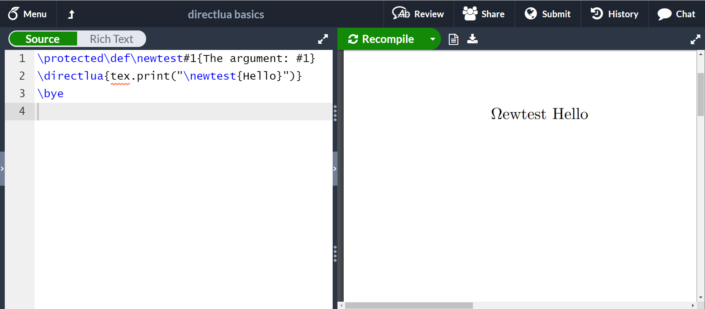
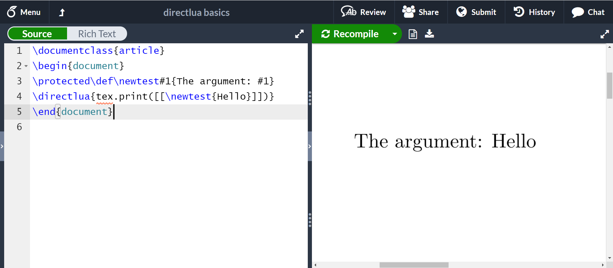
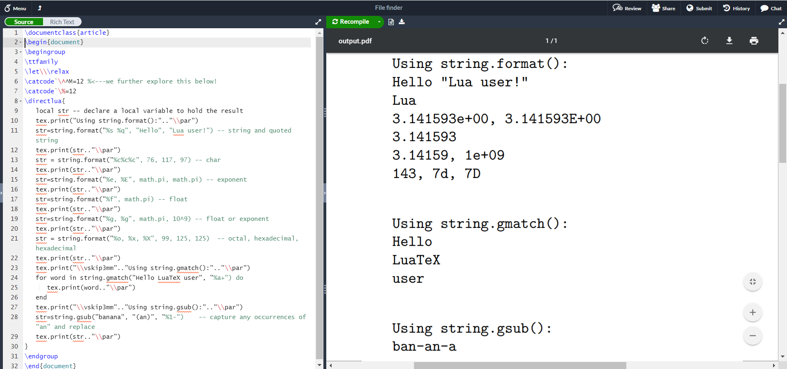

An Introduction to LuaTeX (Part 2): Understanding \directlua
The goal of this article
In the first part of this article, An Introduction to LuaTeX (Part 1): What is it—and what makes it so different?, we briefly reviewed LuaTeX as an extremely versatile TeX engine: a sophisticated, programmable, typesetting system which provides a wide range of tools for constructing document engineering and production solutions.
In this concluding installment, we take a close look at the most vital component of the LuaTeX toolbox: the \directlua command which provides the “gateway” to programmatic control of LuaTeX’s typesetting through the Lua scripting language.
However, fully exploiting LuaTeX via \directlua requires some background knowledge of several TeX topics: TeX’s tokens, token lists and expansion mechanism. The goal of this article is to explore and explain these fundamental TeX concepts: piecing together the TeX-related processes behind \directlua to develop an understanding of how it works and provide the foundations upon which to build your own typesetting solutions using LuaTeX.
This article includes numerous short examples to demonstrate and explain key aspects of \directlua’s behaviour, deliberately avoiding overly-complex code in favour of short code fragments. Where necessary, examples use basic (raw/plain) TeX—although most people use and prefer LaTeX (macros), basic TeX commands have the advantage of simplicity.
Introduction to the Lua in LuaTeX
Lua is a scripting language whose source code is highly portable and easy to embed into software applications, allowing developers to incorporate scripting capabilities into their programs. Lua has been embedded into many applications and is a popular choice within the software games industry—perhaps the most famous example is World of Warcraft.
LuaTeX, as its name suggests, is a TeX engine which embeds the Lua scripting language, providing users with the ability to control LuaTeX’s typesetting behaviour by including Lua programs (scripts) into their documents. In addition to direct control of LuaTeX, users can leverage Lua purely as a very capable programming language to perform tasks that might be extremely difficult to achieve using the TeX language—which is, by any fair measure, a challenge to learn and master. Through the addition and integration of Lua, LuaTeX becomes a very versatile and powerful TeX engine which directly supports two programming languages.
Using Lua and TeX in your document: enter \directlua
Lua and TeX are two very different programming languages: Lua is much closer to what most people think of as a programming language but TeX, with its category codes, tokens, macros and expansion mechanism is far removed from most peoples’ experiences/expectations of a language in which to write programs. However, as history has shown, the TeX language has endured because it is good at what it was designed for: controlling typesetting, even if its mode of operation is somewhat arcane.
To address the challenge of mixing the Lua and TeX languages in a single TeX document, LuaTeX’s developers introduced a new command called \directlua which is the route to using Lua—both as a standalone programming language in its own right and for controlling LuaTeX’s typesetting behaviour.
The \directlua command allows users to embed Lua code in their TeX documents; that code is subsequently passed on to LuaTeX’s built-in Lua language interpreter. However, \directlua also allows you to combine Lua and (La)TeX code together, within the same \directlua command—although that introduces additional complexities due to fundamental differences in Lua and TeX-based programming languages. The key challenge when using a combination of (La)TeX and Lua code is to ensure those two languages co-exist peacefully and don’t get “in each other’s way”.
\directlua is best suited for use with shorter in-document Lua code fragments but you can use it with more extensive Lua programs, should you wish to. Generally, more substantial Lua programs, and Lua code libraries, are saved to external files which can be loaded by using Lua’s dofile() function within a \directlua command. From the TeX-processing standpoint, a significant advantage of using external Lua code files is avoidance of complications that arise from TeX’s category code mechanism—a topic fully explored in this article.
More formal description of \directlua
The LuaTeX Reference Manual describes \directlua as follows (slightly modified):
In order to merge Lua code with TeX input, a few new primitives are needed. The primitive
\directluais used to execute Lua code immediately. The basic syntax is\directlua{⟨code⟩}. The⟨code⟩is expanded fully, and then fed into the Lua interpreter. After reading and expansion has been applied to the⟨code⟩, the resulting token list is converted to a string as if it was displayed using\the\toks.
Of course this is technically accurate but, perhaps, not so easy to understand without some knowledge of lower-level TeX processes—such as tokens and expansion.
Understanding \directlua: Which topics will we cover?
In this article we’ll take a closer look at some key background topics and offer a number of examples designed to demonstrate how \directlua works and where (or why) you need to be careful when combining TeX and Lua in your ⟨code⟩.
We’ll explore the following topics in sufficient detail to provide a foundation for understanding \directlua and its “pre-processing” of the code you use within it:
- category codes and TeX tokens: converting text to tokens and tokens to text;
- TeX’s expansion process (and preventing expansion);
- Lua escape sequences/mechanisms for characters and strings;
- using Lua-style comments;
- a short introduction to LuaTeX’s Lua API.
If you understand how TeX engines create and use tokens and develop an awareness of TeX’s expansion mechanism then you’ll have the foundations necessary to unlock the incredible versatility of LuaTeX’s \directlua command.
The foundations: from text to tokens and tokens to text
Overleaf has published several articles which take an in-depth look at TeX tokens and related concepts so we won’t repeat all that material here; instead, we’ll outline those areas/topics relevant to developing a better understanding of \directlua.
Here is a list of previously published articles which may be of interest:
- What is a TeX token?
- What is a TeX token list?
- How does \expandafter work: An introduction to TeX tokens
- A six-part series: How do TeX macros actually work?
Understanding character tokens
Any character a TeX engine can read from a text file is represented by two numeric values:
- its character code (ASCII value or, today, its Unicode code point);
- a second, TeX-centric, value called its category code.
Readers who would like to know more about category codes may be interested to read this introduction published by Overleaf: So where do we start? With category codes.
For example, if a TeX engine reads-in a character A it would have access to two pieces of information: A’s character code (65), and its category code (11, usually). Once TeX has input that character A, its category code won’t be changed but user macros can make category code changes that might affect any subsequent character A which has not yet been read by TeX. Consequently, TeX needs to record that this character A, just read in, has category code 11. To do that TeX uses the integer pair (65,11) to calculate another integer value that it calls a character token. By calculating that token value, which is passed on to TeX’s inner processing, that particular A and its category code are bound together; in effect, that character token encapsulates the data TeX needs to know about that character for use in any subsequent typesetting activities deeper inside the TeX engine.
How are character tokens calculated?
Firstly, we need to remember that TeX engines use category code 13 for the purpose of creating so-called active characters: any character with category code 13 behaves like a mini-macro; consequently, and as we’ll see below, tokens for active characters are calculated differently to regular characters with other category codes such as 10, 11 or 12.
For non-active characters:
- older 8-bit engines (Knuth’s TeX, e-TeX, pdfTeX) calculate character tokens for non-active characters using
\[\text{(non-active) character token} = (256 \times \text{category code}) + (\text{ASCII character code})\]
- for LuaTeX, which has to deal with Unicode character values, the calculation for non-active characters is similar but produces much larger integer values:
\[ \text{(non-active) character token} = (2^{21} \times \text{category code}) + (\text{Unicode value})\]
Going back to our earlier example for the letter A with category code 11, LuaTeX would calculate a character token value of \(2^{21} \times 11 + 65 = 23068737\). Once calculated, that character token value binds that particular character A to a category code value of 11. User macros may change the category code for any subsequent character A, but this one’s category code has been fixed by converting it to a token for use as it passes through LuaTeX’s inner workings. LuaTeX has preserved, or encapsulated, the intended meaning of that character as determined at the time it was read in.
TeX engines use a total of 16 different category codes and any of those category codes can be assigned, via the \catcode command, to any character the TeX engine is capable of reading. Changes to category codes are used to alter the way TeX engines process particular characters in the input, allowing TeX users to write macros that produce special typesetting results or behaviour.
Active characters
As noted, TeX engines use category code 13 to attach a “special meaning” to a character, making it a so-called active character which behaves like a mini-macro: no leading \ is required, the isolated character, due to its category code, is enough to trigger its macro-like behaviour.
Because an active character acts as a mini-macro, it is not converted to a character token but to a second (integer) token type called a command token. These are calculated as follows:
- for older 8-bit engines (Knuth’s TeX, e-TeX, pdfTeX) tokens for active characters are calculated via:
- calculate an intermediate value called \(\text{curcs}\) (current control sequence) where \[\text{curcs} = \text{character code} + 1\]
- calculate the token value where \[\text{active character token} = \text{curcs} + \text{4095}\]
- for LuaTeX the calculation is a little more complex because it has to deal with the full range of Unicode characters, any one of which could be made active:
- calculate the intermediate integer value \(\text{curcs}\) by applying a so-called hash function to the active character’s Unicode code point value expressed in UTF-8: \[ \text{curcs}=\texttt{hashfunction}\text{(UTF-8 text for Unicode value of active character)}\]
- calculate the integer token value: \[\text{active character token} = \text{curcs} + 2^{29} - 1\]
Examples
- 8-bit engines: the token calculation for the active character
~(character code 126) results in \(\text{curcs} = 126 + 1 = 127\), giving a token value of \(4095 + 127 = 4222\). - LuaTeX: the token calculation for the active character
~results in \(\text{curcs}=3186\) giving a token value of \(3186 + 2^{29} - 1 = 536874097\). LuaTeX tokens use much larger integer values!
Understanding command tokens
In addition to processing individual characters, TeX engines can, of course, process sequences of characters called commands (or, more correctly, control sequences). By tradition, the \ character is used to signal the start of a command but that’s merely a convention—in fact, any character with category code 0 (the escape character) could be used instead.
TeX engines recognize two types of command which are known as control words and control symbols:
- control words: commands constructed from one or more characters that have category code 11;
- control symbols: single-character commands where that character’s category code is not 11: such as
\$,\#or\\.
Note: The TeX primitives \chardef, \mathchardef, \countdef, \dimendef, \skipdef, \muskipdef and \toksdef are also used to define control sequences but, unlike regular macro definitions, the resulting control sequences (control words or control symbols) are not expandable—we’ll explore these in more detail below.
How are command tokens calculated?
Just like active characters, TeX engines use the second type of integer token value to represent commands: command tokens—recall that active characters also generate command tokens because they behave as mini-macros.
The calculations used by 8-bit engines to create command-token integers can be found in this Overleaf article. Here, we will summarize the key steps in command token calculations for LuaTeX—which are slightly different because LuaTeX has to process Unicode character code values which can be considerably larger than 8-bit values; however, LuaTeX’s calculations follow the same general principles used by older 8-bit engines.
After detecting an incoming command, TeX engines, including LuaTeX, ignore the leading \ character: it is not used in calculations of command token values but merely acts as a “switch” to inform a TeX engine it needs to process a command. The command token value is calculated using the sequence of (1 or more) characters present in the name of the command—LuaTeX calculates command tokens for control symbols and control words using the same algorithm:
- calculate the intermediate integer value \(\text{curcs}\) by applying a so-called hash function to the Unicode UTF-8 string of characters contained in the command name: \[ \text{curcs}=\texttt{hashfunction}\text{(Unicode UTF-8 string of characters in command name)}\]
- calculate the command token value where \[ \text{command token} = \text{curcs} + 2^{29} - 1\]
Examples
- for the
\\command (a control symbol), LuaTeX calculates \(\text{curcs}=94\), resulting in a token value for\\of \(94 + 2^{29} - 1 = 536871005\). - for the
\vskipprimitive command (a control word) LuaTeX calculates \(\text{curcs}=3560\), resulting in a token value for\vskipof \(3560 + 2^{29} -1 = 536874471\). - for the user-defined macro
\mynewmacro(a control word) LuaTeX calculates \(\text{curcs} = 2971\), resulting in a token value for\mynewmacroof \(2971 + 2^{29} -1 = 536873882\).
Once created, tokens may be stored for later use via so-called token lists or they can be immediately passed on for further processing inside the TeX engine. Using integer values to represent tokens not only works across all types of computing platform/operating system but it is also a very efficient way for TeX to store/process data.
How a TeX engine identifies the type of token (command or character)
Given a particular integer token value, \(T\), a TeX engine can easily determine if \(T\) represents a command or a character by testing if \(T\) exceeds a certain \(\text{threshold value}\)—that \(\text{threshold value}\) depends on the TeX engine. If \(T \geq \text{threshold value}\) then \(T\) is a command token otherwise \(T\) is a character token. The \(\text{threshold value}\) is \(4095\) for 8-bit engines and \(2^{29}-1\) (536,870,911) for LuaTeX. Knuth designed the methods used in token-calculation formulae so that his TeX engine, and all subsequent engines based on his code/architecture, can quickly and easily test token values.
Tokens can be broken apart (and converted back to text)
Tokens (integers) are the mechanism through which a TeX engine “encapsulates” everything it needs to record about an item of input (character or command). However, there are times when a TeX engine needs to reverse the tokenization process—to find out what was originally read-in to produce that token value—an individual character or a sequence of one or more characters forming the name of a command:
- for character tokens: Any character token can be split into its two constituent parts: the character code and corresponding category code assigned to that character at the point it was originally read-in. Like all TeX engines, LuaTeX will not change that original category code allocation but will make use of it during further internal processing activities.
- for command tokens: These are slightly more detailed but if you look at LuaTeX’s calculation of command tokens, including tokens for active characters, you see they follow a pattern: \[\text{command token} = \text{curcs} + 2^{29} -1\]
where \(\text{curcs}\) is calculated according to the type of command token being generated: active character, control symbol or control word. The \(\text{curcs}\) variable is an extremely important component of a TeX engine’s inner operations: given any command token (integer) value LuaTeX can very easily extract the value of \(\text{curcs}\) from that command token using \(\text{curcs} = \text{token value} - (2^{29} -1)\).
Why is \(\text{curcs}\) so important?
The internal TeX variable \(\text{curcs}\) (current control sequence) is a vitally important component of a TeX engine’s inner “under the hood” operations. Although you won’t, and cannot, use or access it directly in your code, \(\text{curcs}\) plays a crucial role because TeX engines use the current value of \(\text{curcs}\) as an index into internal tables which store data about every command currently known to the engine. Those tables store information about the current meaning of a command: what does it do, or represent and, in addition, they record the sequence of characters originally used to calculate that \(\text{curcs}\) value. By extracting the value of \(\text{curcs}\) from a command token, a TeX engine is able to determine the name, i.e., human-readable text, corresponding to any (command) token, enabling it to perform the token-to-text conversions which are a key aspect of \directlua’s operation.
Converting integer tokens back to characters or character sequences (command names)
We’ve seen that TeX engines convert input characters, or character sequences, to integer token values but there are occasions when a TeX engine needs to reverse that process—to output the human-readable text originally used to create those integer token values; for instance:
- writing error or warning messages to the screen or
.logfile; - outputting TeX/LaTeX code to a text file via the
\writecommand; - when converting a sequence of tokens to text within
\directlua(as we’ll soon see!)
Converting character tokens to text
As noted, tokens for non-active characters are calculated using an input character’s category code and character code (Unicode value). LuaTeX uses the formula:
\[ \text{character token} = (2^{21} \times \text{category code}) + (\text{Unicode value})\]
It is a straightforward programming task to split the integer \(\text{character token}\) value to obtain its constituent character code (\(\text{Unicode value}\)) and \(\text{category code}\).
Converting command tokens to text
All TeX engines store the name (sequence of characters) of every command they “know about”: whether that command is a user-defined macro or a built-in primitive—the storage of primitive-command names takes place when the TeX engine starts-up, long before it begins to process your code. For user-defined commands (macros), the name of that macro (minus the leading \) is stored away as part of the macro-definition processes inside TeX engines.
When a TeX engine needs to access or output the human-readable text from which an integer command token was originally calculated, it will first determine the \(\text{curcs}\) value for that token; in LuaTeX, \(\text{curcs} = \text{token} - (2^{29} -1\)). Using the value of \(\text{curcs}\) extracted from a command token, a TeX engine can access an internal data structure called the string pool to determine the sequence of human-readable characters originally used to calculate that particular value for \(\text{curcs}\) and, consequently, the corresponding command token.
As we’ll see, these token-processing activities—converting character sequences to integer token values and converting integer token values back to character sequences (“de-tokenization”)—are the fundamental mechanisms used inside \directlua.
Token lists
As a TeX engine is reading input, generating character and command tokens (and processing them), it might encounter certain commands which instruct the engine to (temporarily) stop passing tokens onward for further processing but, instead, store them away for later use. The most common example is defining a macro using one of the macro-definition commands \def, \edef, \gdef or \xdef—LaTeX commands such as \newcommand are macros that provide additional functionality constructed around low-level primitives which, eventually, perform the actual macro-definition process. A macro can be considered as the name given to a particular list of stored tokens: a token list.
TeX engines make extensive use of token lists, especially temporary internal-only lists used for internal processing purposes. Every TeX engine also provides user-level commands to create token lists that are stored away for when the user, or the TeX engine itself, requires them. The number of token-list-creation commands (built-in primitives) varies according to the TeX engine but they all share a core minimum set supported by every engine, such as the \toks primitive.
In practice, a token list is just a stored sequence of integer values:
- the input is read to generate (calculate) individual tokens, representing a character or command;
- each token is then stored away, preserving the sequence in which tokens were generated from the input.
TeX engines store token lists using a data structure called a linked list (the singly-linked variety). Readers wishing to know more on token lists are invited to read the Overleaf article What is a TeX token list? which uses an analogy to construct the concepts/ideas behind a token list. An in-depth exploration of TeX’s token lists, and how they are used in macro processing, can be found in the Overleaf article series How do TeX macros actually work?
A token list in graphic form
The following graphic shows a LuaTeX-generated token list with corresponding token values produced from the following input
Hi, \TeX! \hskip 5bp
For example, if we define \mymacro as \def\mymacro{Hi, \TeX! \hskip 5bp} the definition of \mymacro would be stored in memory using a token list such as this:

The token list is a sequence of linked items called nodes, the name given to a small package of LuaTeX’s memory allocated to hold each item in the list (like individual links in a chain). Each node contains an integer token value and memory address of the next node in the chain, forming a data structure called a linked list. The last node indicates the end of the list using a special “null value” for the next node—because there isn’t one.
Notes:
- For convenience, we have included the address of each individual node but, in practice, that data isn’t stored within token-list nodes; only the address of the next node is required to build TeX engine token lists.
- The second column in the graphic titled “What each token means” shows a series of grey boxes containing information on the token contained in each node: these are purely for information and do not form part of the actual data stored in the token list.
Here is a table of the token values contained in the token list depicted above:
| Input item | Type of input | Category code (if character) |
Token value |
| H | character | 11 | 23068744 |
| i | character | 11 | 23068777 |
| , | character | 12 | 25165868 |
| <space> | character | 10 | 20971552 |
| \TeX | command (macro) | 536871539 | |
| ! | character | 12 | 25165857 |
| <space> | character | 10 | 20971552 |
| \hskip | command (primitive) | 536874247 | |
| 5 | character | 12 | 25165877 |
| b | character | 11 | 23068770 |
| p | character | 11 | 23068784 |
Note: Our original input text has a <space> after the \hskip command but there is no token representing that <space> character in the token list. That <space> character was absorbed by LuaTeX’s input-scanning (reading) process because it was used to terminate LuaTeX’s search for characters comprising the \hskip command.
How \directlua really works
Now that we have explored tokens, token lists and converting tokens-to-text, the next challenge is to understand the TeX-engine concept of token expansion.
As noted, \directlua{⟨code⟩} can be asked to process ⟨code⟩ which contains both Lua and TeX/LaTeX code but LuaTeX’s in-built Lua language interpreter doesn’t understand TeX or LaTeX: so how can this work? How is it possible for the ⟨code⟩ to contain TeX/LaTeX instructions without thoroughly confusing the Lua interpreter with commands it does not understand? For example, the following \directlua command only uses TeX macros, but it works:
\def\aa{tex}
\def\bb{.}
\def\cc{print}
\def\dd{("Hello")}
\directlua{
\aa\bb\cc\dd
}
This \directlua command results in LuaTeX typesetting Hello but why and how does this work because the Lua language does not understand TeX macros?
The answer is contained within the earlier description we borrowed from the LuaTeX Reference Manual but we can consider that \directlua{⟨code⟩} works by LuaTeX initially “pre-processing” the ⟨code⟩ before anything is passed to the Lua interpreter. The nature of this “pre-processing”—i.e., what it really means and its consequences for your ⟨code⟩—is the next topic we’ll address to help readers interested to take advantage of the power and flexibility of \directlua.
How LuaTeX processes \directlua: A first look
To build-out our understanding of \directlua’s “pre-processing” activities we can start with the following simplified diagram which gives an overview of what happens. The ⟨code⟩ provided to \directlua{⟨code⟩} is first converted to tokens using the processes and calculations discussed above; that sequence of tokens is stored in a token list. Once that token list has been built, each token in that list is converted back to its textual representation: the text produced by every token—character token or command token—is combined (concatenated) to create a single string of code passed on to the Lua interpreter for execution.

But wait, what would be the point of going from text to tokens and converting those tokens straight back into text? You might not be surprised to learn that, yes, there is an additional and vital process that we haven’t included in this graphic: token expansion. Every token produced from the text in your ⟨code⟩ is subjected to a type of “inspection” in which LuaTeX applies a test to see if that token represents a command which belongs to the subset known as expandable commands. If it does, LuaTeX filters-out that command by removing it from your ⟨code⟩ and replacing it with the result(s) of a process TeX engines call token expansion.
How LuaTeX processes \directlua: A second look (at expansion)
TeX’s expansion mechanism is a core component of all TeX-based typesetting engines because, ultimately, each one is derived from (or based on) Knuth’s original source code and design of TeX. However, the concept of expansion is difficult to explain in concise, yet accessible, language because, in practice, expansion is an “umbrella” term used to describe a single process—but one that produces a range of outputs. Those varied outcomes are a consequence of the somewhat eclectic set of commands to which expansion can be applied, so you can consider that each expandable command has a certain “expansion behaviour”.
As a first approximation to understanding expansion we can say that expansion of a token (command) means removing that command (token) from TeX’s current input and replacing it by a sequence of tokens which result from executing that particular expandable command—replacing the original token with the results/consequences of its expansion behaviour. However, this initial “definition” of expansion—in terms of generating new tokens for TeX to read—isn’t totally accurate for all expandable commands, but it is good enough as a starting point.
To give a straightforward example: the TeX primitive \jobname is an expandable command and its expansion is a sequence of character tokens which represent the name of the main TeX input file. If TeX decides to expand a \jobname command (token) it is removed from TeX’s current input source and replaced by the sequence of character tokens it generates—which TeX then proceeds to read/process.
Within \directlua, after an expandable token is processed (removed) and replaced by new tokens, LuaTeX will go on to read those new tokens it has just put in place—but some of those new tokens could also be expandable. Because \directlua performs so-called full expansion, LuaTeX will read those new tokens and, once again, go through the expansion process to expand (remove) any new (expandable) tokens—this expansion process continues until no expandable tokens are left. However, there are two important exceptions to this “keep on expanding” rule, both of which we’ll discuss below:
- using the construct
\the\toks; - deliberate prevention (suppression) of expansion for one or more selected tokens.
As noted, our working definition (first approximation) to understanding expansion doesn’t cover the full range of expansion behaviours demonstrated by the subset of expandable commands. For example, some expandable commands don’t generate tokens in the way that \jobname does, but they might:
- “filter” tokens from the input: a TeX engine’s conditional commands (
\if,\ifcat,\ifnum,\ifdim,\ifodd,\ifvmode, …) are expandable. Their expansion behaviour is a type of “token filtering”—conditionals can be used in\directlua. - “juggle” tokens in the input: the
\expandaftercommand is expandable and changes the sequence in which two tokens are expanded. - prevent expansion: the expandable commands
\noexpandand\unexpandedsuppress expansion of command tokens in the input. - convert character sequences in the input to command tokens:
\csname … \endcsname. - convert internal quantities to a sequence of character tokens:
\numberand\theare expandable commands which generate a sequence of character tokens representing the value of an internal quantity. - convert command tokens to character tokens:
\stringand\detokenizeare expandable commands which convert their arguments to a sequence of character tokens with category code 12. Note that\detokenizediffers from\string:\detokenizecan process multiple tokens and it introduces a space character, with category code 10, after processing command tokens created from control words. In effect,\detokenizeadds a trailing space-character after the command name—we’ll see some examples later in the article.
Refining our “definition” of expansion
We can now generalize our definition to say that expansion of a command (token) involves removal of that command (token) from TeX’s current input source and replacing it with the result of the token operation(s) performed by that command. In essence, the expansion process causes an expandable command to perform some type of “operation” on tokens in TeX’s current input which affects the number, or behaviour, of tokens that TeX will subsequently read—the precise nature of that “operation” depends on which command is being expanded. All macros, and active characters, are expandable but only a small number of a TeX engine’s built-in commands (primitives) are classified as expandable—the list of expandable commands depends on the TeX engine you are using.
Every new TeX engine inherits the primitive commands built into its ancestors(s)—the earlier-generation TeX engine(s) from which it was derived—and some of those inherited primitives will be expandable. Of course, a new TeX engine may choose not to implement some of the primitive commands contained in the earlier engines or to modify their behavior to suit the needs of the new engine. In addition, new TeX engines typically implement additional primitives to provide support for their own enhanced functionality—some of those might also be expandable. Consequently, the number of expandable commands available to you will vary according to the TeX engine you are using—LuaTeX has quite a collection of them.
Another difficulty with explaining/understanding expansion, and perhaps the real challenge, is knowing exactly when a TeX engine is, or is not, actually going to perform the expansion process. That is a large and complex topic because expansion is deeply embedded throughout the inner workings of TeX engines: we don’t have space to address this in any detail beyond the use of expansion in \directlua.
How LuaTeX processes \directlua: A final look
The following diagram summarizes the \directlua pre-processing activities which take place inside the LuaTeX engine itself. In this diagram we also show two low-level (internal) LuaTeX functions that actually do the work: scan_toks() and tokenlist_to_cstring(). Those functions are written in the C language and reside deep inside the executable LuaTeX software: they are part of LuaTeX’s inner machinery and not directly accessible to your TeX/LaTeX code.

The following description of \directlua ⟨code⟩’s pre-processing activity summarizes the diagram above.
- The sequence of characters in your ⟨code⟩ is processed by
scan_toks(). Its purpose is to read your ⟨code⟩ character-by-character to generate character tokens and command tokens. Because it is creating tokens, the category code assigned to each character in ⟨code⟩, at the time it is read-in, is extremely important. - During
scan_toks()’s token processing (generation) any expandable command (token) is expanded unless prevented via commands such as\protected(macro definitions),\noexpand,\unexpandedetc. Active characters (category code 13) are also expanded (unless prevented). - The stream of tokens created by
scan_toks()is built into one long token list—tokens present in that list incude those produced from expansion being applied to expandable commands (such as macros) present in your⟨code⟩. Note too thatscan_toks()does not trigger or cause execution of any token representing a non-expandable command: such non-expandable tokens are simply passed-through to be incorporated into the token list being constructed. - Once the token list is finished and all expansion activity is complete, that token list is processed by another function called
tokenlist_to_cstring()which converts each token in the final token list back into its textual representation. This generates a string of text which is the Lua code to be passed on to the Lua interpreter. For successful execution, that string needs to contain syntactically correct Lua code. - Lua’s processing of that code takes place in two steps:
- LuaTeX’s built-in Lua interpreter parses and “compiles” the Lua code generated in the previous steps. If that parsing/compilation fails, the Lua interpreter will generate errors (such as syntax errors)—those errors can cause the LuaTeX run to fail unless you chose to use
--interaction=nonstopmodeon the command line. - If parsing/compilation succeeds, the Lua interpreter executes the code compiled in step (5a).
In essence, the scan_toks() function is the core of LuaTeX’s pre-processing activities: its main task is to expand all expandable TeX/LaTeX commands contained in the text of your ⟨code⟩ and construct a token list out of everything it has processed. Again, we stress that scan_toks() does not execute non-expandable commands (tokens): it simply stores those tokens in the token list it is constructing. Once completed, that token list is subsequently converted back to a textual representation by tokenlist_to_cstring()—a token list is a TeX-only concept which is completely alien to a Lua interpreter, thus the need to convert it to text, becoming Lua code for passing on to the Lua interpreter.
Expansion as a programming language “interface”
You can think of \directlua’s expansion process being used as a mechanism, or interface, for passing data/information from the “TeX World” across into the “Lua World”: providing a method for the TeX language to communicate data to the Lua language. For example, TeX code such as \number\count75 can be used to transfer a “TeX World” value stored in count register 75 across to the “Lua World” integer variable x:
\count75=1564 % Data existing in the "TeX World"
\directlua{
local x=\number\count75 \space % Transfer TeX data to the "Lua World"
tex.print("x= "..x)
local y = (2*x-65)/5
tex.print(" and y = "..y)
}
This generates the Lua code
local x=1564 tex.print("x= "..x) local y = (2*x-65)/5 tex.print(" and y = "..y)
Note: We added <space>\space after \number\count75 to ensure a space character was preserved between 1564 and tex.print—that’s not strictly necessary here because Lua would still parse the code correctly if we omitted it. The space character following immediately after \count75 is absorbed during the process TeX engines use to look for numeric values—here, the value being supplied to \count. The space character after 75 is used to terminate LuaTeX’s search for digit sequence 75 and is absorbed from the input. The \space macro expands to provide the space character needed to separate the text 1564 and tex.print.
Using the code above LuaTeX will typeset
x= 1564 and y = 612.6
Here, the “data passing” mechanism is achieved by \number: an expandable command which, in this instance, instructs TeX to retrieve the value stored in \count register 75 and from that value (1546) generate a series of character tokens, one character token for each digit, resulting in a token sequence for the digits 1, 5, 6 and 4. Those 4 character tokens are incorporated into the main token list being constructed by \directlua and subsequently converted back to their textual representation when the token list is converted to text. It is undoubtedly a very circuitous route going from the \count75 register value stored inside LuaTeX, to digits destined for Lua code but, ultimately, it works.
TIP: If you want to inspect the results of LuaTeX’s expansion activities you can write code like this:
\directlua{
local foo=[[local x=\number\count75
tex.print("x= "..x)
local y = (2*x-65)/5
tex.print(" and y = "..y)]]
print(foo)
}
In this example we use the long-brackets method to create a string variable foo whose purpose is to hold the string of Lua code generated from expansion of everything between [[ and ]]. That string is printed out to the console via the Lua function call print(foo).
On Overleaf you can view similar results by writing the contents of foo to the .log file using the LuaTeX Lua function texio.write():
\directlua{
local foo=[[local x=\number\count75
tex.print("x= "..x)
local y = (2*x-65)/5
tex.print(" and y = "..y)]]
texio.write(foo)
}
Tokens in the \directlua token list: non-expandable tokens and unexpanded tokens
We’ve noted that \directlua{⟨code⟩} performs full expansion of your ⟨code⟩: it removes and expands all expandable commands until only non-expandable tokens are left. The sequence of tokens created by \directlua’s processing (in the scan_toks() function) are strung together to form a token list whose individual tokens will be converted back to text for passing on to Lua.
However, we’ve not yet addressed the final part of this story because we need to consider the two “classes” of command token which can make it through to the token list being built within \directlua: we’ll refer to them as shorthand command tokens and unexpanded tokens:
- shorthand command tokens: This type of command token arises from control sequences defined using one of the TeX primitives
\chardef,\mathchardef,\countdef,\dimendef,\skipdef,\muskipdefand\toksdef. These primitive commands are used to define control sequences which represent a numeric value—the resulting control sequences are not expandable. - unexpanded tokens: This token type arises from commands that would normally be expanded but
\directluahas either: - been explicitly instructed not to expand them; for example, suppression of expansion by the commands
\noexpandor\unexpanded—we’ll explain shortly how this is done; - injected tokens by processing the sequence
\the\toks(more on that below).
Two “groups” of token in a \directlua token list
Based on our discussions, we can say that tokens contained in the token list being constructed during the first stage of \directlua’s pre-processing (in the scan_toks() function) fall into two groups:
- inherently non-expandable tokens
- any token representing a non-active character;
- any token representing a non-expandable primitive command;
- any token representing a shorthand command (these are not expandable, see below).
- unexpanded tokens:
- any token representing an expandable command whose expansion was suppressed (or avoided) during
\directlua’s pre-processing.
Shorthand command tokens: creating non-expandable commands
As noted, TeX engines provide a set of primitives (built-in commands) that can be used to construct non-expandable control sequences (indicated here by ⟨command⟩). These primitives take the form:
\chardef ⟨command⟩ = ⟨numeric value⟩\mathchardef ⟨command⟩ = ⟨numeric value⟩\countdef ⟨command⟩ = ⟨numeric value⟩\dimendef ⟨command⟩ = ⟨numeric value⟩\skipdef ⟨command⟩ = ⟨numeric value⟩\muskipdef ⟨command⟩ = ⟨numeric value⟩\toksdef ⟨command⟩ = ⟨numeric value⟩
where ⟨numeric value⟩ is some integer value appropriate to each command.
Here, we’ll briefly review the use of \chardef to demonstrate the key feature of these primitives—producing a ⟨command⟩ that is non-expandable. You can use \chardef\mydollar=`\$ to create the control sequence \mydollar and use it to typeset a $:
I paid \mydollar30.
This will typeset I paid $30. The control sequence \mydollar created by \chardef is not expandable, as we can see from the following example:
\chardef\mydollar=`\$
\directlua{
local x =[[I paid \mydollar30.]]
texio.write(x)
}
Which produces the following text in the .log file
I paid \mydollar 30.
This shows \mydollar was not expanded during \directlua’s pre-processing. The space appearing after \mydollar is added when a command token is converted to its representation as text.
When you use \chardef to create a control sequence, TeX’s internal classification of that control sequence (command) results in it being non-expandable which is very different behaviour compared to control sequences defined by one of the macro-definition commands: \def, \edef, \gdef or \xdef. As noted above, during the process of constructing its token list \directlua examines each incoming command token to check for expandability. If a command token is not expandable, it passes straight through to the token list and its text representation will later reappear in the string of Lua code resulting from conversion of tokens in the token list back into their textual form.
Brief notes on plain TeX vs. LaTeX
Historically, Knuth’s original plain TeX defined the commonly-used control symbols \%, \&, \# and \$ using \chardef—not using one of the standard macro-definition commands \def, \edef, \gdef or \xdef. For example:
\chardef\#=`\# \chardef\$=`\$ \chardef\%=`\% \chardef\&=`\&
The strange `\ syntax is a TeX method to get the numeric character code value. In the old plain TeX regime, these control symbols are not expandable (due to \chardef) but LaTeX (or packages) may redefine of them as macros to provide enhanced functionality—that would make them expandable, so you may need to be aware of this.
How does this affect \directlua?
Let’s compare the result of the following code run under plain TeX and LaTeX. For simplicity we’ll write the results to the .log file using the LuaTeX Lua API function texio.write().
\directlua{
local x=[[\$150 for the "\#1" product---20\%! more than its competitor, Widget \& Co.]]
texio.write(x)
}
Running this code using plain TeX produces the following output in the .log file, showing the result of any expansions:
\$150 for the "\#1" product---20\%! more than its competitor, Widget \& Co.
Clearly, under plain TeX none of the control symbols\$, \#, \% or \& were expanded—because they are all created using \chardef.
Running that code using the LaTeX document:
\documentclass{article}
\begin{document}
\directlua{local x=[[\$150 for the "\#1" product---20\%! more than its competitor, Widget \& Co.]] texio.write(x)}
\end{document}
produces the following output in the .log file
\protect \TU\textdollar 150 for the "\#1" product---20\%! more than its competitor, Widget \& Co.
Clearly, running LaTeX generates a result different to plain TeX because under LaTeX the command \$ has been expanded, indicating it is a macro.
Note: In both plain TeX and LaTeX \directlua did not fully process any of the control symbols \%, \&, \# and \$ to generate the corresponding character. During the expansion process performed by \directlua the tokens representing these control symbols—or, for LaTeX, their expansion—pass straight through to the main token list being constructed.
Note: Control symbols are formed from a single character not of category code 11, such as \#. When a token representing a control symbol is converted back to its textual representation TeX engines do not insert a space character after that text. This special treatment of control symbols is a built-in rule for how TeX engines operate.
Unexpanded tokens: suppressing expansion
\directlua’s pre-processing is one example where a TeX engine is performing expansion but you might want to prevent expansion being applied to one or more tokens that would otherwise be expanded. By way of another example, LuaTeX (and all TeX engines) perform an expansion process, similiar to that of \directlua, when they process the \write command:
\write file-number {⟨material⟩}
\write instructs a TeX engine to output ⟨material⟩—often containing TeX/LaTeX commands—to a text file (file-number); any expandable commands within ⟨material⟩ will, unless prevented, be expanded before ⟨material⟩ is actually written-out to that file.
As you might expect, TeX engines provide commands to suppress or control expansion:
\noexpand⟨token⟩: prevents expansion of the single⟨token⟩;\unexpanded{⟨material⟩}: prevents expansion of all expandable commands (tokens) in⟨material⟩. It is, in effect, a multi-token version of\noexpand;\protected: a prefix added to macro definitions which prevents expansion of that macro in certain circumstances (such as during\directlua,\writeor\edef).
Despite names which suggest otherwise, both \noexpand and \unexpanded are expandable commands and provide good examples of seeing a TeX engine’s expansion process as performing “token operations”: the operation here is to prevent expansion of one or more subsequent tokens (commands). Because \noexpand and \unexpanded are both expandable commands they are removed and processed (executed) during \directlua’s pre-processing as it constructs the token list from your ⟨code⟩.
\noexpand ⟨token⟩
\noexpand ⟨token⟩ prevents expansion of the single ⟨token⟩. \noexpand within \directlua will be expanded (removed from the input) and replaced by the results of its “expansion behaviour”. The result of expanding \noexpand is to create a special (hidden) ⟨marker token⟩ that is placed in front of the original ⟨token⟩ whose expansion is to be suppressed: that ⟨marker token⟩ acts as a flag saying “do not expand the next token”. Because \directlua is performing full expansion it will re-process any tokens which result from the “expansion behaviour” of an expandable command. Consequently, when the expansion of \noexpand ⟨token⟩ is complete, LuaTeX goes back to read the results and sees the two-token sequence ⟨marker token⟩⟨token⟩ which causes the original ⟨token⟩ to pass through, unexpanded, into the token list being constructed by \directlua.
Example
If we write
\directlua{
local x= "\TeX"
}
the \TeX macro is expanded into it constituent tokens which, in plain TeX, will result in the following text being passed to Lua (note: Lua cannot process this code, it’s just an example to demonstrate the process):
local x = "T\kern -.1667em\lower .5ex\hbox {E}\kern -.125emX"
If we suppress expansion of the \TeX macro using \noexpand
\directlua{local x= "\noexpand\TeX"}
the following Lua code is produced (again, Lua can’t run this code; it is simply an example to demonstrate \noexpand):
local x= "\TeX "
Because of \noexpand, \directlua will not expand \TeX but simply allow the token value representing the \TeX command to pass through, unscathed, into the token list being built during the first stage of \directlua’s pre-processing.
Note: The space character appearing after \TeX is introduced by LuaTeX’s subsequent conversion of the \TeX integer token nalue back to its textual representation (within the tokenlist_to_cstring() function).
\unexpanded{⟨material⟩}
\unexpanded is an expandable command which suppresses expansion of all tokens formed from ⟨material⟩. As we have noted, when a TeX engine performs expansion any expandable command is removed from the input and replaced by the results of its “expansion behaviour”; so what does that actually mean for \unexpanded? Usually, during full expansion, once the expansion process for a particular command is completed the TeX engine goes on to read/process any tokens arising from that command’s “expansion behaviour”—it needs to further expand any tokens that were produced. However, \unexpanded bypasses any further expansion: here is how it does that.
Inside the TeX engine, the \unexpanded command first converts the characters and commands in ⟨material⟩ to a temporary token list comprised of unexpanded tokens. After all tokens have been created and stored in that temporary token list, the \unexpanded command causes \directlua to skip going back to read and process them—even though \directlua is performing full expansion. Instead, those unexpanded tokens pass straight through and become incorporated into the main token list being built by \directlua (in the scan_toks() function). In this way, everything in ⟨material⟩ is converted to tokens and the expansion process is skipped for that set of tokens. The operation of \unexpanded{⟨material⟩} is similar to the use of \the\toks, which we discuss below.
Example
\unexpanded produces results in a manner similar to \noexpand except it can prevent expansion of multiple tokens; here is an example:
\directlua{
local x = "\unexpanded{\foo\bar\foobar}. But Lua can't process this code!"
}
which produces the following text as code for Lua:
local x = "\foo \bar \foobar . But Lua can't process this code!"
Note: There are space characters after each command name. These are again a consequence of LuaTeX’s subsequent conversion of the unexpanded tokens \foo, \bar and \foobar back to text within the tokenlist_to_cstring() function.
\protected macro definitions
The \protected command is a prefix applied to a macro definition to prevent that macro being expanded when TeX is building an expanded token list, such as the token list built by \directlua’s pre-processing.
Example
Suppose you define the following macros with and without using the \protected prefix:
\def\macroA{"This unprotected macro contains a string"}
\protected\def\macroB{"This protected macro also contains a string"}
If you use Lua’s string concatenation operator (..) to write
\directlua{
local x=\macroA..\macroB
}
\directlua’s pre-processing would produce the following code for passing to Lua:
local x="This unprotected macro contains a string"..\macroB
\macroA is not defined using \protected so it is expanded, producing the first part of the string to be concatenated, but \macroB is defined using \protected so it has not been expanded.
During pre-processing, LuaTeX’s scan_toks() function created a token for \macroA, recognized it was a regular expandable command and expanded it: that expansion produces a sequence of character tokens, one character token for each character in "This unprotected macro contains a string". Each character token is passed on and added to the token list being built.
When scan_toks() creates the token for \macroB it notices that command was defined as \protected and does not expand it: the token representing \macroB passes through, untouched (not expanded), into the token list being built. After that token list has been built, the next stage of pre-processing, within the tokenlist_to_cstring() function, is to convert all tokens in the token list back to their textual representation. The unexpanded token representing \macroB is detected and converted to its text representation, resulting in the text \macroB appearing in the code destined for Lua. Note that Lua cannot actually concatenate "This unprotected macro contains a string"..\macroB to produce the final string because \macroB has no meaning in Lua’s syntax, resulting in the error unexpected symbol near '\'.
Trivia: The \protected command was introduced by \(\varepsilon\text{-}\mathrm{\TeX}\), the first major extension of Knuth’s original TeX software, and is supported by all TeX engines whose code ancestry includes \(\varepsilon\text{-}\mathrm{\TeX}\).
Unexpanded tokens: Using \the\toks in \directlua
Life in programming would not be the same without those “special cases” to deal with and use of \the in conjunction with \toks in a \directlua command is one such special case.
Brief background on \toks
The TeX primitive \toks instructs a TeX engine to save some tokens for use later on: instead of being passed on for further processing, those tokens are put to one side and stored away in a memory location specified using a token register. For example, we can tell a TeX engine to create some tokens and store them in token register location 100 using
\toks100={Hi, \TeX! \hskip 5bp}
Here, TeX uses token register 100 to access a known location inside its memory: a storage area designated for holding lists of tokens.
Tokens representing everything between the { and } are created, but not expanded, and strung together in a token list—similar to the token list we explored earlier in this article. To re-use those tokens we would write \the\toks100 in which \the (an expandable command) instructs TeX to fetch the stored tokens and insert them at the location where you wrote \the\toks100. Another way to think of this is \the\toks causes TeX to insert some tokens at that location.
The \toks command does not expand any of the tokens it is asked to create and save: it simply converts characters and commands between { and } to tokens and stores them.
Back to \directlua
In the discussion of expansion we noted \directlua{⟨code⟩} performs full expansion of ⟨code⟩: removing all expandable commands and replacing them with the result of their expansion behaviour—continuing to further expand any tokens arising from the inital expansion of an expandable command.
\the is an expandable command so \directlua will expand it; however, when \the is used in conjunction with \toks within \directlua, as in \the\toks⟨token register⟩, the inserted tokens are not expanded any further. Expansion of \the\toks⟨token register⟩ injects the sequence of unexpanded tokens, stored in ⟨token register⟩, directly into the token list being constructed by \directlua: this behaviour bypasses the usual process of full expansion. In effect, those tokens pass through, unexpanded, to become incorporated into the main token list being constructed by \directlua—this pass-through process for unexpanded tokens is similar in operation to \unexpanded, as discussed earlier.
Example
Suppose we define the macro \mymacro as \def\mymacro{\TeX}. It contains just one token for the \TeX command (which is a macro): so we have an expandable command \mymacro that contains another macro \TeX, which is also expandable.
The following code will result in Lua trying to create a string variable x:
\def\mymacro{\TeX}
\directlua{
local x="\mymacro"
}
Within \directlua, the token for \mymacro is expanded but that results in another expandable token, \TeX, which is further expanded. In plain TeX, those expansions result in the following text passed to Lua:
local x = "T\kern -.1667em\lower .5ex\hbox {E}\kern -.125emX"
This code tries to define a string which contains text representing the expanded version of the \TeX macro. If you try to run this example Lua will attempt to construct that string but it will fail, generating an error:
invalid escape sequence near ' "T\k'.
Later in this article we’ll explore the meaning of “invalid escape sequence”.
Let’s now contrast the use of \mymacro with placing the \TeX token inside a token list generated by a \toks command:
\toks100={\TeX}
\directlua{
local x="\the\toks100"
}
LuaTeX’s \directlua processing will generate this string of text for Lua:
local x = "\TeX "
The space character after \TeX is generated by LuaTeX’s command-token-to-string conversion process.
But note: The \TeX macro has not been expanded into its constituent tokens. \the\toks100 caused the tokens stored in register 100 to be inserted buts that’s all: they are not expanded any further and become incorporated into the main token list being build by \directlua (within the function scan_toks()). Putting tokens into a token list created by \toks is yet another way to prevent tokens being expanded.
If we run this example it too produces an error:
invalid escape sequence near ' "\T'.
We explore Lua escape sequences later in the article.
Other commands/techniques used in expansion
In this section we look at some additional TeX commands/methods which can be useful in situations where expansion is being applied (such as within \directlua).
\string ⟨token⟩
\string is an expandable command which converts the ⟨token⟩ into a series of character tokens, each with category code 12.
For example, \string\TeX would produce a series of 4 character tokens \, T, e and X where each character is assigned category code 12 (including the leading \ character).
If we write
\directlua{
local x="I will use \string\newcommand"
print(x)
}
the \string command will be expanded, resulting in a sequence of character tokens with category code 12. After \string is expanded, the resulting character tokens (representing each character in \newcommand) will be incorporated into the main token list being constructed by \directlua. Once \directlua has finished constructing its main token list, its constituent tokens are converted back to their textual representation which produces the following code for passing on to the Lua interpreter:
local x="I will use \newcommand" print(x)
When this code is passed to Lua, print(x) will output the string x to the screen (console). However, we’ve been slightly sneaky and deliberately used an example command starting with \n. If you are able to run this example on a local TeX installation you’ll notice that Lua prints the following text to the screen:
I will use ewcommand
To run this code on Overleaf you can instruct LuaTeX to write directly to the .log file using the LuaTeX Lua API function texio.write(string):
\directlua{
local x="I will use \string\newcommand"
texio.write(x)
}
If you inspect the resulting .log file you’ll see it also contains
I will use ewcommand
This unexpected output is due to Lua interpreting the \n at the start of \newcommand as the escape sequence for the linefeed character (character code 10): it assumes that you want start a new line of text which begins with ewcommand. We discuss Lua escape sequences later in this article.
\detokenize{⟨material⟩}
\detokenize is, in its effects, a multi-token version of \string and it too is an expandable command that converts everything in ⟨material⟩ to a sequence of character tokens with category code 12—except space characters (ASCII/Unicode value 32) which get category code 10. \detokenize also inserts a trailing space character after command names that are control words (e.g., \foo) but no space character is inserted after control symbols (e.g., \#, \% etc).
Example
Even if the macros \foohoo, \foo, \bar and \foobar are not defined, if you write this:
\directlua{
local x = "\string\foohoo\detokenize{\foo\bar\foobar}"
}
it would produce the following text as code for passing to the Lua interpreter
local x = "\foohoo\foo \bar \foobar "
If you do not use \string and \detokenize and write:
\directlua{local x = "\foohoo\foo\bar\foobar"}
\directlua would process \foohoo, recognize it is a command and try to expand it; but because \foohoo is not defined it would result in an error:
! Undefined control sequence.
l.1 \directlua{local x = "\foohoo
\foo\bar\foobar"}
?
Because \string and \detokenize convert their arguments into a series of character tokens, \directlua’s expansion process does get the opportunity to detect expandable command tokens \foohoo, \foo, \bar, or \foobar: they are turned into sequences of character tokens long before they can trigger expansion.
As noted previously, expansion of a command involves removing it from the input and replacing it with the result of its “expansion behaviour”. The results of expansion (usually tokens) are subsequently read by the TeX engine. Here, the “expansion behaviour” for \string and \detokenize is to absorb character and command tokens from the input and convert them to sequences of character tokens, initially stored in a temporary token list, which \directlua subsequently reads. Those character tokens become incorporated into the main token list being constructed by \directlua.
The following graphic depicts how \string converts the \foohoo command to a sequence of character tokens, producing a temporary token list that is subsequently read by \directlua to incorporate those character tokens into the main token list being constructed.

If \string or \detokenize encounter characters in their argument e.g., \string a or \detokenize{abc} those characters (here, with category code 11) produce character tokens but with category code 12.
Notes:
If we return to the example above:
\directlua{local x = "\string\foohoo\detokenize{\foo\bar\foobar}"}
which produces the following text as code for passing to the Lua interpreter
local x = "\foohoo\foo \bar \foobar "
we can observe the following:
\detokenizehas inserted a space character after each macro name but\stringdid not.\stringacts on a single token.- In the string
"\foohoo\foo \bar \foobar "used to definexwe will once again encounter Lua’s escape character mechanism (discussed below):\barstarts with\bwhich is the Lua escape sequence used to represent the backspace character (character code 8);- commands
\foohoo,\fooand\foobarall starts with\f, the Lua escape sequence used to represent the formfeed character (character code 12).
Because the character sequences
\band\fare used within a string created using double quotes"..."they will produce unwanted results unless steps are taken to prevent that using Lua’s so-called long-brackets string method: a subject we can now discuss along with Lua escape sequences.
What are “Lua escape sequences”?
Programming languages reserve certain characters for “special use” as part of the language syntax: in effect, those characters are defined to have some form of special meaning. However, there are times when you need to temporarily “switch off” such a character’s special meaning if, for example, you want that character to be embedded as part of a longer string where it’s standard behaviour would introduce syntax errors. In essence, that character needs to be processed without triggering its standard interpretation—to slip through without being noticed. To do this, programmers use a technique called escaping in which a “special character” is represented by its so-called escape sequence.
A standard example (also supported by Lua) is using double quotes inside a string where you escape the inner double quotes using the escape sequence \":
"When asked about LuaTeX they replied: \"It is an awesome TeX engine!\" I agreed."
The Lua language provides a number of mechanisms to work with escape sequences:
- standard sequences including
\n(newline),\r(carriage return),\\(backslash),\"(double quote),\t(horizontal tab),\v(vertical tab) and\'(single quote); \xXX, whereXXis a sequence of exactly two hexadecimal digits;\ddd, wheredddis a sequence of up to three decimal digits;- at the time this article was written (August 2019) the latest version of LuaTeX, although not yet available on Overleaf, uses version 5.3 of Lua which introduced support for UTF-8 escape sequences:
\u{XXX}. This escape mechanism is for UTF-8 encoded Unicode characters whereXXXis a sequence of one or more hexadecimal digits representing the character code point. Note that the enclosing brackets{ }are mandatory.
Controlling escape sequences
Traditionally, strings are defined using double quotes as in "this is a string"; within such a string you can use escape sequences: "this is a string.\nI'll now start on a new line.". However, Lua has a second and very convenient mechanism to define strings: its so-called long brackets mechanism in which you define a string by enclosing the text in [[ and ]]:
[[I am a long brackets string]]
Within a string created using the long-brackets method, Lua’s character-escape mechanism is switched off: escape sequences are treated as regular characters. For example, in the string
[[I am a long brackets\n string]]
the \n escape sequence is not treated as the single carriage return character (ASCII code 13) but as two regular characters: \ followed by n.
Why are long bracket strings so useful?
As we’ll later explore, LuaTeX provides a suite of specialized, built-in, Lua functions that you can use with \directlua to control LuaTeX’s typesetting behaviour. Among those many functions is one called tex.print(string) that allows you to pass string material from Lua code back to LuaTeX for typesetting. A very simple example is:
\directlua{tex.print("Hello, World!")}
which will cause LuaTeX to typeset Hello, World!
The string used in tex.print(string) can also include text representing TeX and LaTeX commands for LuaTeX to process. However, TeX/LaTeX commands start with a \ character which is problematic with strings created using double quotes because Lua would try to parse the string, detect the initial \ character and interpret it as the beginning of an escape sequence. When Lua tries to process the escape sequence it will usually fail because the initial \ combined with the first character in many TeX/LaTeX command names does not form a valid escape sequence known to Lua. For example when processing a string such as "I like \LaTeX" Lua would see \L and fail with the error “invalid escape sequence”, and this is the cause of the errors noted above.
Long-bracket strings come to the rescue!
The long-brackets method of creating (defining) strings is extremely useful because even though TeX/LaTeX commands start with a \ character, the long-brackets string method disables (switches off) Lua’s escape sequence mechanism. Here is a short example, remembering that we need to prevent macros from being expanded using, for example, \protected or \noexpand.
Suppose we define a \newtest macro like this
\protected\def\newtest#1{The argument: #1}
and use it in \directlua with the LuaTeX Lua API function tex.print():
\directlua{
tex.print("\newtest{Hello}")
}
Due to the use of \protected, the macro \newtest is not expanded which results in the following text passed to Lua:
tex.print("\newtest {Hello}")
The space character added after \newtest and before the opening brace ({) is a side-effect of \directlua’s conversion of command tokens back to their textual representation.
This code is passed to Lua which subsequently executes the LuaTeX function tex.print() but there’s a problem which manifests itself in ways that depend on the fonts you are using. In LaTeX on Overleaf you would see output like this:

along with a warning in the log file:
Missing character: There is no (U+000A) in font [lmroman10-regular]:+tlig;!
In plain TeX you might see output that looks something like this:

In both cases the \newtest macro is not called and the output is not what we intended. The error is caused by Lua’s escape character mechanism: in the text \newtest {Hello} the macro name starts with \n which Lua recognizes as the escape sequence for a linefeed character so it replaces \n by ASCII character 10, or in hex 0A. In the LaTeX error message, U+000A is a way to represent the Unicode value using 4 hex digits.
Because the \n is converted to the linefeed character, LuaTeX does not see a macro call but instead believes it is being asked to typeset some text that starts with ASCII character code 10:
⟨ASCII 10⟩ewtest {Hello}
Depending on the font used, LuaTeX may, or may not, be able to typeset the ⟨ASCII 10⟩ character but the remaining text is output as-is with the { and } treated as a group and not printed.
Plain TeX gives a different result because the default font is Computer Modern Roman which has a strange encoding that results in a capital Omega typeset when character code 10 is seen.
To prevent these problems we need to use long-bracket strings to prevent Lua’s escaping mechanism being applied. The correct result is produced with
\directlua{tex.print([[\newtest{Hello}]])}
which produces the result shown in the following screenshot:

Expansion and non-execution of non-expandable commands
When discussing expansion we noted it is a process in which a TeX engine removes an expandable command (token) from the current input and replaces it with the result(s) produced by that expandable command. Because \directlua is performing expansion-only activities (to generate a token list), it does not take LuaTeX’s processing any further than that. Once an expandable command has been read and fully expanded the results of that expansion—which frequently includes non-expandable commands (tokens)—will be incorporated into the token list being built, ready for conversion back to text for passing on to Lua.
There is an important principle at work here: during expansion-only activities designed to produce a token list, TeX engines, including LuaTeX, do not execute any non-expandable primitive, built-in, TeX commands.
In the case of \directlua{⟨code⟩}, if the fully expanded version of your ⟨code⟩ produces, or contains non-expandable TeX/LaTeX commands they will be passed on to Lua (represented as text).
Example
Here is an example to demonstrate that non-expandable primitives are not executed during expansion-only processing (such as within \directlua). Suppose we define a macro \setcountreg like this:
\def\setcountreg#1#2{\count#1=#2\relax}
Note: We use \relax after parameter #2 to prevent LuaTeX overshooting when scanning the input in its search for the numeric value (argument) to match parameter #2.
If, outside of \directlua, we later run the macro like this
\setcountreg{100}{50}
The value in count register 100 is \the\count100.
it would output
The value in count register 100 is 50.
In this context, any TeX engine would process the macro \setcountreg—expand the macro, determine the arguments and continue to read and action (execute) commands contained in the macro’s replacement text (definition). The result here is to assign 50 as the value stored in register \count100.
However, when a TeX engine is performing expansion-only activities, as it is with \directlua, it will not execute the non-expandable commands contained in the macro’s definition.
If we write
\def\setcountreg#1#2{\count#1=#2\relax}
\directlua{
local x = [[\setcountreg{100}{50}]]
}
it produces the following text as the code for Lua:
local x = [[\count 100=50\relax ]]
The Lua code produced above shows that within \directlua the \setcountreg has been expanded, its arguments identified and substituted into the appropriate parameter (#1 and #2) but it goes no further than that: the non-expandable primitive TeX command \count was not executed during \directlua’s expansion processing.
However, LuaTeX will execute the TeX code if we pass the resulting string x back to LuaTeX via tex.print(x) like this
\count100=50 % set \count100 to a starting value of 50
\def\setcountreg#1#2{\count#1=#2\relax}
\directlua{
local x = [[\setcountreg{100}{250}]]
tex.print(x)
}
The value stored in count register 100 is \the\count100.
After \directlua has finished the ouput would be
The value stored in count register 100 is 250.
showing that count register 100 does now contain the value 250.
The Lua code produced from the above example is
local x = [[\count 100=250\relax ]] tex.print(x)
This code defines x to be a string created using the long-brackets method which is used to avoid errors with erroneous escape sequences. If we used double quotes "..." to define x, the character combination \c at the start of \count would trigger an error: invalid escape sequence near ' "\c'.
The LuaTeX Lua API call tex.print(x) results in LuaTeX executing the TeX code sequence \count 100=250\relax and \count100 is assigned a value of 250 as seen from the typeset output:
The value stored in count register 100 is 250.
Caution: macros and the LuaTeX Lua API
In the above example we saw that during \directlua’s pre-processing (expansion) LuaTeX did not execute the code \count 100=250, which contains the non-expandable primitive command \count: to run (execute) that code we had to pass it back to LuaTeX via tex.print().
\directlua is just one instance where LuaTeX is performing expansion-only processing to construct a token list. There are other commands which perform similar expansion processing and token-list generation activities, such as \write and \edef: those commands also do not execute non-expandable primitives during their expansion processing. It is general principle that TeX engines do not execute non-expandable primitives when constructing a token list during expansion-only processing activities.
Rewriting our macro to use the LuaTeX Lua API
We can re-write the \setcountreg macro using a LuaTeX Lua API function called tex.setcount(), thus avoiding TeX commands to change the value stored in count register 100:
\def\setcount#1#2{\directlua{tex.setcount(#1,#2)}}
\count100=50
count register 100 contains \the\count100\par
\setcount{100}{250}
count register 100 now contains \the\count100\par
This code will typeset:
count register 100 contains 50 count register 100 now contains 250
Here we are using tex.setcount(), one of LuaTeX’s many Lua API functions, to directly access LuaTeX’s internal data storage area to place the value 250 in the memory location representing count register 100. We have, in effect, bypassed LuaTeX’s standard TeX engine input-processing methods: reading input, creating tokens and executing TeX primitive commands. However, there is a cautionary tale: by using LuaTeX’s Lua API functions, expansion-only processing activity can result in side-effects: changes to values stored inside the TeX engine that would not otherwise be possible with pure TeX/LaTeX commands.
Example: unexpected side-effects
Here is an example to demonstate unexpected side-effects which can arise with macros using \directlua. Suppose we write the following code:
\def\dochange{\directlua{tex.setcount(999,12345)}}
\edef\careful{\dochange}
\the\count999
Running this code typesets 12345!
How can that be? We did not explicity call any code or macros to put that value in count register 999. Or did we?
We defined \dochange with a \directlua command that uses tex.setcount() to store the value 12345 in count register 999: in TeX code it is the equivalent of \count999=12345. We then used the standard TeX primitive \edef to define the macro \careful—it is the use of \edef which triggers the unexpected side-effect.
\edef fully expands its argument: here, it detects an expandable macro \dochange and expands it. The \dochange macro uses the expandable command \directlua which contains a Lua API call; so the expansion of \dochange results in expansion of \directlua and that causes tex.setcount() to be called, which changes the value in count register 999.
If we redefine \dochange to use TeX commands:
Before: count register 999 contains \the\count999.\par
\def\dochange{\count999=12345\relax}
\edef\careful{\dochange}
After: count register 999 contains \the\count999.\par
running this code typesets
Before: count register 999 contains 0. After: count register 999 contains 0.
Clearly, there was no effect on \count999. When \edef defines \careful it expands \dochange but that expansion produces unexpandable TeX primitives only: they are not executed but simply stored in the token list comprising the definition of \careful.
Just for good measure, the same principle explains why this produces typeset output:
\def\dochange{\directlua{tex.print("Hello")}}
\edef\careful{\dochange}
Brief introduction to LuaTeX’s Lua API
As we’ve seen, \directlua not only enables you to write conventional Lua code, or a mixture of Lua and TeX/LaTeX code, but it also provides access to a suite of additional Lua functions (specific to LuaTeX) that you can use (call) to communicate with, or directly control, the inner workings of the LuaTeX typesetting software. We’ve used several Lua functions in this article, tex.print(), texio.write(), tex.setcount() and these, along with many more, are documented in The LuaTeX Reference Manual in which groups of related functions are referred to as libraries.
You can think of these Lua functions as LuaTeX’s Lua API (Application Programming Interface) which provide the tools to construct sophisticated typesetting and document engineering solutions by controlling the typesetting behaviour of LuaTeX using Lua as the driver.
As noted, LuaTeX organizes its API into set of functions it called libraries: groups of functions which are related through their purpose or actions. Each set of functions is designed to provide access to particular aspect of LuaTeX’s internal processes, data structures, data storage and typesetting algorithms. Internally, LuaTeX is constructed from multiple components: software libraries/tools (mostly written in C) that not only comprise the TeX engine itself but other sub-systems including Lua, MetaPost, Kpathsea, FontForge, libpng and zlib. These libraries are integrated to build the features and functions of the LuaTeX executable software and it is through the Lua API that users are given access to LuaTeX’s functionality derived from its integration and coordination of those multiple software components.
Some examples and pitfalls
In this section we present some further examples which make use of the topics, concepts and explanations provided in this article.
Challenges using \\ in \directlua
In Lua, \\ is used as an escape sequence to represent the single character \ but In TeX/LaTeX \\ is a single-character macro (a control symbol), so it is subject to expansion within \directlua’s pre-processing. As noted in discussions on tex.stackexchange What does \\* do?, the \\ macro is widely used in LaTeX, and LaTeX packages, to control linebreaks and other things. In that discussion a renowned TeX/LaTeX expert comments
The
\\command is one of the most overloaded commands of LaTeX, i.e., its actual definition depends on the place where it is used.
Essentially, \\ is frequently redefined to achieve different effects. However, let’s assume that we want to use \directlua to typeset the command \LaTeX by using the LuaTeX API call tex.print(). We know the Lua language uses the \\ escape sequence to represent a single \ hence if we write \\LaTeX within a \directlua command, will it work? Well, let’s see what happens, assuming we are running LaTeX not plain TeX or ConTeXt (a powerful non-LaTeX macro system/format):
\directlua{
tex.print("\\LaTeX")
}
This fails with a cascade of errors, starting with something like this:
! Undefined control sequence.
\\ ->\let \reserved@e
\relax \let \reserved@f \relax \@ifstar …
If you run it under plain TeX you also get an error, albeit a different one:
! Argument of \\ has an extra }.
When LuaTeX pre-processes \directlua{tex.print("\\LaTeX")}, \\ is recognized as a LaTeX macro which needs to be expanded. It is the expansion of \\ which triggers the errors—the exact cause of the problem(s) will depend on the way that \\ has been defined. Ultimately, as far as LuaTeX is concerned, we are telling it to use the \\ macro in a situation for which it was not written (defined) and thus it triggers an error.
However, there are multiple solutions that allow you to use \\.
Solution 1: \let\\\relax
If we write
\let\\\relax
\directlua{
tex.print("\\LaTeX")
}
then \directlua{tex.print("\\LaTeX")} this will work. Why?
The \\ construct can be confusing so let’s remind ourselves that TeX engines recognize two types of macro command which are known as control words and control symbols:
- control words: commands constructed from one or more characters that have category code 11;
- control symbols: single-character commands where that character’s category code is not 11: such as \$, \# or \\.
After detecting the initial \ at the start of a command, TeX checks the category code of the first letter in the command’s name and uses the result of this test to determine if it is a control word or a control symbol. The second character in \\ is category code 0, not 11, which means it falls into the category of control symbol but, ultimately, it is just a macro (but not all control symbols are macros as we saw in the explanation of \chardef).
When LuaTeX starts to process \\ it looks up the meaning of that macro and discovers it is \relax so LuaTeX does just that: there is nothing to expand which results in a token for the \\ macro being put into the token list being constructed internally (by scan_toks()). Once the token list has been built, the tokenlist_to_cstring() function converts all the tokens back to their textual representation, producing tex.print("\\LaTeX") which is passed to Lua. Because the \\ sequence is Lua’s escape sequence for a single \, Lua processes that, resulting in the command \LaTeX being passed back to LuaTeX for typesetting .
Solution 2: \noexpand
If we use \noexpand like this
\directlua{
tex.print("\noexpand\\LaTeX")
}
expansion of \\ is suppressed so a token representing the (unexpanded) macro \\ will make it through into the token list constructed by scan_toks(). When the tokenlist_to_cstring() function converts the tokens in the token list back to their textual representation for Lua to process, Lua will see
tex.print("\\LaTeX")
and process \\ as the escape sequence for a single \, resulting in the command \LaTeX being typeset.
Solution 3: Using a string.char() “trick”
When LuaTeX pre-processes code in a \directlua command it creates character tokens from regular characters (usually category codes 10, 11 and 12) and only takes further action, such as expansion, when it detects characters with category codes 13 (active characters) or detects expandable primitive commands and macros.
We can use the standard Lua function string.char() to write
\directlua{
local sl = string.char(92)
local txt = sl.."LaTeX"
tex.print(txt)
}
This works because the expansion process in \directlua simply does not see any characters that trigger expansion: our code is comprised of regular characters with category codes 10, 11 and 12 so it passes straight through the tokenization process. When those tokens are converted back to text the following code will be passed to Lua:
local sl = string.char(92) local txt = sl.."TeX" tex.print(txt)
When Lua processes this code, the string variable txt becomes the concatenation of \ and LaTeX; i.e., txt="\LaTeX" which, via the LuaTeX API function call tex.print(txt), is typeset.
Solution 4: Using \string\\
The TeX primitive \string⟨token⟩ is an expandable command whose expansion behaviour is to convert ⟨token⟩ into its human-readable form using characters with category code 12. If ⟨token⟩ represents a macro or primitive \string will output a sequence of category code 12 characters including the leading \ character (or whatever \escapechar is defined to be at the time of doing the conversion). If we write
\directlua{
tex.print("\string\\LaTeX")
}
The result of expanding \string\\ is to convert \\ into two character tokens: two \ characters each with category code 12. This prevents the two-character sequence \\ being interpreted (expanded) as a macro and both \ character tokens are incorporated into the token list being built by \directlua. When that token list is converted back to text, the resulting Lua code is
tex.print("\\LaTeX")
in which Lua will interpret \\ as the escape sequence for \, resulting in \LaTeX being typeset.
Using the tilde character (~)
The Lua language uses the ~ character (called tilde) as part of its syntax, including its syntax for performing a “not equal” test; for example, to test if a variable x is not equal to 4 we could write:
local x=3
if x ~= 4 then
print("x is not equal to 4")
end
If we try to run this simple Lua code via \directlua:
\directlua{
local x=3
if x ~= 4 then
print("x is not equal to 4")
end
}
we get an error:
[\directlua]:1: 'then' expected near '\'.
That’s odd because our code is correct: we have used 'then' and there is no \ character in our code, so what went wrong? To understand this, we must remember that, to TeX/LaTeX, ~ is usually defined to be a “special character” with category code 13: so-called active characters which are mini-macros and thus subject to expansion. When \directlua detects the ~ character it is expanded by removing it from the input and replacing it with the result of its expansion. Using plain TeX, the resulting text (code) that LuaTeX produces and passes to the Lua interpreter does not actually contain the ~ character, and is:
local x=3 if x \penalty \@M \ = 4 then print("x is not equal to 4") end
The ~ character has been removed and expanded into its constituent commands—the Lua code above results from plain TeX’s definition of the active character ~. Now we can see why Lua responds with the error 'then' expected near '\'—it starts to parse this code but encounters the word \penalty which means nothing to Lua and generates a syntax error.
To fix this, the ~ character needs to have a safe category code at the time \directlua is processing your code; for example, we can temporarily change the category code of ~ to 11 (letter) by enclosing the code in a group:
\begingroup
\catcode`\~=11
\directlua{
local x=3
if x ~= 4 then
print("x is not equal to 4")
end
}
\endgroup
This code works as expected and x is not equal to 4 is printed to the console. There are other options: we can use the expandable commands \noexpand or \string.
Using \string⟨token⟩
We can apply \string to the single-character ⟨token⟩ ~ which has category code 13 (active character); \string converts the ~ character to generate a character token which has category code 12. If we do
\directlua{
local x=3
if x \string~= 4 then
print("x is not equal to 4")
end
}
it produces the Lua code we require:
local x=3 if x ~= 4 then tex.print("x is not equal to 4") end
Using \noexpand⟨token⟩
We can use \noexpand~ to suppress expansion of the active character ~
\directlua{
local x=3
if x \noexpand~= 4 then
print("x is not equal to 4")
end
}
The unexpanded ~ token passes through to the token list being built in \directlua and will be converted back to text which produces working Lua code.
Using the # character
Within the Lua language the # character can be used to find the length of a table. However, if we try the following code
\directlua{
local tbl = {}
tbl[1] = "Hello"
tbl[2] = "World"
tex.print("Table length is "..#tbl)
}
we might expect LuaTeX to typeset
Table length is 2
but it generates an error:
\directlua]:1: attempt to get length of a number value
This error is triggered because the # character usually has category code 6 (macro parameter)—the # character has two uses in TeX/LaTeX: to indicate macro parameters (#1, #2… #9) and the replacement text in alignment templates (for \halign and \valign).
When \directlua is generating tokens to build its token list it sees the # character with category code 6 and creates a suitable character token to represent it. When the time comes to convert the final token list back to textual form, the character token for # (with category code 6) receives a special treatment: it is output as two consecutive characters: ##, resulting in the following code being passed to Lua:
local tbl = {} tbl[1] = "Hello" tbl[2] = "World" print(##tbl)
On conversion to Lua code, the original # has been doubled and that generates an error:
\directlua]:1: attempt to get length of a number value
This problem arises due to TeX’s syntax which uses a double hash symbol ## to represent or generate a single # token; this syntax is used in macros which define other macros that take parameters, or in macros used to create templates for the \halign or \valign table-construction commands. This is rather confusing so let’s look at an example.
Example
Suppose we define a macro \mymacro which takes a single parameter, #1, but it also defines a second macro \foo which itself takes a single parameter. To distinguish between the parameter #1 used with \mymacro and the need to define \foo to use its own parameter #1 TeX syntax requires that you use ##1 inside \mymacro to represent the parameter to be used with \foo:
\def\mymacro#1{\def\foo##1{#1 Hello##1}}
If you were to write \mymacro{Hey!} it would define the macro \foo to be
\def\foo#1{Hey! Hello#1}
Note that the \mymacro’s parameter #1 (Hey!) has been incorporated into the definition of \foo and the sequence ##1 has been converted to #1 in the definition of \foo. So we can use \foo like this:
\foo{, World!}
to typeset Hey! Hello, World!
We can resolve \directlua’s treatment of the # character by temporarily changing its category code before LuaTeX processes the code. For example:
\begingroup
\catcode`\#=11
\directlua{
local tbl = {}
tbl[1] = "Hello"
tbl[2] = "World"
tex.print("Table length is "..#tbl)
}
\endgroup
This generates the Lua code
local tbl = {} tbl[1] = "Hello" tbl[2] = "World" tex.print("Table length is "..#tbl)
which typesets the result we expected:
Table length is 2
Using the % character
Within TeX/LaTeX, the % character is typically used to include single-line comments in your code: to signal to the TeX engine that it should ignore everything from that point until the end of the line on which the % is written. However, within the Lua language, the % character is used within some very useful string-processing functions, such as string.format(...), string.gmatch(...), and string.gsub(...) in which the % character plays an important role as part of those function’s syntax.
When used with TeX/LaTeX, % acts as the comment character because it is assigned category code 14. To make it behave as regular character, and switch off its usual TeX/LaTeX behaviour, we need to change its category code to something safe, such as 12. The \directlua example below uses a number of techniques discussed earlier in the article, together with one that we have not yet mentioned: \catcode`\^^M=12, which allows us to use Lua comments in our code; this is discussed below.
Example
The following examples are borrowed from lua-users.org, suitably modified for use within \directlua.
\documentclass{article}
\begin{document}
\begingroup
\ttfamily
\let\\\relax
\catcode`\^^M=12 %<---we further explore this below!
\catcode`\%=12
\directlua{
local str -- declare a local variable to hold the result
tex.print("Using string.format():".."\\par")
str=string.format("%s %q", "Hello", "Lua user!") -- string and quoted string
tex.print(str.."\\par")
str = string.format("%c%c%c", 76, 117, 97) -- char
tex.print(str.."\\par")
str=string.format("%e, %E", math.pi, math.pi) -- exponent
tex.print(str.."\\par")
str=string.format("%f", math.pi) -- float
tex.print(str.."\\par")
str=string.format("%g, %g", math.pi, 10^9) -- float or exponent
tex.print(str.."\\par")
str = string.format("%o, %x, %X", 99, 125, 125) -- octal, hexadecimal, hexadecimal
tex.print(str.."\\par")
tex.print("\\vskip3mm".."Using string.gmatch():".."\\par")
for word in string.gmatch("Hello TeX user", "%a+") do
tex.print(word.."\\par")
end
tex.print("\\vskip3mm".."Using string.gsub():".."\\par")
str=string.gsub("banana", "(an)", "%1-") -- capture any occurrences of "an" and replace
tex.print(str.."\\par")
}
\endgroup
\end{document}
The following screenshot shows the typeset result of the code above:

Why is Lua code shown on a single line?
As you may have noticed, all the (generated) Lua code fragments shown in this article’s examples are presented as a single line of text: line breaks originally present in the \directlua code snippets are not followed. Why is that? It is because line breaks in the Lua code have been stripped out during LuaTeX’s pre-processing within \directlua, causing the Lua code to become one long line of text. That behaviour can be traced to the way TeX engines handle end-of-line characters—denoted by \r (carriage return) and \n (line feed) within programming literature. Just why we might need to worry about these fine details will become clear when we discuss using Lua’s mechanisms for commenting-out sections of code.
When software writes (saves) a text file, each individual line of text is terminated by so-called “newline” characters—the actual newline character(s) depend on the application and operating system being used to write-out that file. Wikipedia has an interesting article which explores the history/evolution of the newline characters in use today.
Given any text file, its individual lines of text could be terminated by various combinations of characters, referred to as carriage return (ASCII/Unicode character 13) and/or line feed (ASCII/Unicode character 10), which are denoted by \r and \n respectively. Because TeX engines are designed to be platform independent they need a method to circumvent the inherently platform-dependent nature of line endings used in text files. Naturally, TeX engines have a built-in (but configurable) method for dealing with line-termination characters.
How TeX engines deal with line endings
When LuaTeX is processing \directlua{⟨code⟩} it reads the text contained in your ⟨code⟩ and applies standard TeX engine methods for processing any line endings contained in your ⟨code⟩. By default, those standard TeX methods cause all line-termination characters (carriage returns and line feeds) to be removed and replaced by space characters. We say “by default” because a TeX engine’s handling of line-termination characters can be modified through a user-configurable parameter called \endlinechar. Here, we’ll provide a short two-step overview but further details can be found in the Overleaf article An introduction to \endlinechar: How TeX reads lines from text files.
Step 1: TeX inserts its own end-of-line character
After reading a line of text from your input file, TeX engines immediately remove any \r or \n characters from the end of that line. Next, TeX engines insert (add-back) their own line-termination character to the end of that line. That character is determined by the value of a user-configurable TeX parameter called \endlinechar and it is through this mechanism TeX engines can process end-of-line characters in a platform-independent manner: they choose, and set, the end-of-line character irrespective of what was originally contained in the input text file.
Typically, TeX engines use the setting
\endlinechar=13
which is the carriage-return character (\r). However, users can always assign another character code as the value of \endlinechar—which we’ll see later in this article.
Consequently, any line-termination character(s) contained in your ⟨code⟩ to be processed by \directlua{⟨code⟩} are stripped out and replaced by a single character determined by the TeX engine itself. Note that TeX engines perform this end-of-line processing immediately after reading a new line of text from a file and before processing any characters in that line (to generate tokens). However, this is not the end of the story: what the TeX engine does with those end-of-line characters (it has insered) explains why the Lua code becomes one single line.
Step 2: TeX converts its end-of-line character to a space
In addition to inserting their own line-termination character, defined by the value of \endlinechar, TeX engines also use category code 5 for characters that should be treated as an end-of-line character. This results in TeX engines usually working with:
- an end-of-line character defined by
\endlinechar; - that same character usually being assigned category code 5.
It is what TeX does to that end-of-line character which explains our quandary regarding single lines of Lua code. When a TeX engine processes a line of input it will, eventually, detect the last character in that line: the character defined by \endlinechar. Usually, that character has category code 5 which causes TeX to replace it with a space character: i.e., at the end-of-lines TeX, in effect, strips out its line-termination character and replaces it with a space. As a side note, TeX engines also use characters with category code 5 to detect blank lines and start a new paragraph, but we won’t address that here.
Of course, being TeX, you can perform all sorts of special macro programming tricks by re-setting the \endlinechar to some other character, and/or giving the character assigned to \endlinechar a category code value of your choice.
If you want to prevent Lua code becoming one single line of text you can either (temporarily) change the value assigned to \endlinechar or change the category code of the standard end-of-line terminator \r.
TeX’s bizarre ^^ notation
In the following sections we will encounter TeX’s unusual ^^ notation, which is known as the “extended character mechanism”. It was designed by Knuth as a way to facilitate typing “control characters” such as end-of-line terminators, tabs and so forth. For example:
^^Jrepresents character code 10 (\n, line feed);^^Mrepresents character code 13 (\r, carriage return).
Character sequences such as ^^M are converted to their corresponding character codes early on in TeX’s input-scanning process, when TeX is reading input characters to generate the corresponding character tokens.
Changing the character assigned to \endlinechar
Remembering that we still need to prevent expansion of the ~ character, we can write
\begingroup
\endlinechar=10 % Change the end-of-line character to \n
\directlua{
local x=3
if x \noexpand~= 4 then
print("x is not equal to 4")
end
}% don’t want the \n appearing here
\endgroup% or a \n here
The above setting for \endlinechar causes LuaTeX to append character code 10 (\n, line feed) to the end of each line it reads in. We do this because \n (line feed) usually has category code 12, which you can test by writing \the\catcode`\^^J. Because \n does not have category code 5, LuaTeX won’t convert it to a space character so it remains at the end of every line read-in by LuaTeX. This results in a character with code 10 remaining at the end of every line, thus making it through into the token list being built by \directlua and subsequently reappearing in the Lua code once the token list is converted to text. With the above change, the Lua code is sent to the Lua interpreter as the following sequence of characters:
\nlocal x=3\nif x ~= 4 then\nprint("x is not equal to 4")\nend\n
where the \n notation is meant to represent character code 10 not some unknown macro \n. Now, the Lua interpreter will see line breaks in the code, exactly as it was originally written in the \directlua command:
local x=3
if x ~= 4 then
print("x is not equal to 4")
end
Incidentally, note that the very first character in the Lua code string is \n (before the local keyword). That \n arises from the line
\directlua{
because there is a line break immediately after the opening { and this too is preserved. To prevent it you can write
\directlua{%
Changing the category code of \r
To maintain line breaks in our Lua code we can also change the category code of \r to something other than 5, so that \r is no longer recognized (treated as) an end-of-line character. With this technique LuaTeX still uses \endlinechar=13 and will continue to add a \r to the end of each line; however, because \r no longer has category code 5, LuaTeX will not recognize the \r character as an end-of-line: it will not convert it to a space and passes it through unscathed to appear in the Lua code.
Remembering that we still need to prevent expansion of the ~ character, we can write
\begingroup
\catcode`\^^M=12 % change category code of \r to 12
\directlua{
local x=3
if x \noexpand~= 4 then
print("x is not equal to 4")
end
}
\endgroup
In this instance the Lua code is sent to the Lua interpreter as:
\rlocal x=3\rif x ~= 4 then\rprint("x is not equal to 4")\rend\r
where the \r notation is meant to represent character code 13 not some unknown macro \r. As with the \endlinechar example, the Lua interpreter will see now line breaks in the code, exactly as it was originally written in the \directlua command:
local x=3
if x ~= 4 then
print("x is not equal to 4")
end
Incidentally, note again that the very first character in the Lua code string is \r (before the local keyword): this too arises from the line
\directlua{
Why did \r use category code 12 but not category code 11?
The answer is due to the risk of accidentally introducing errors triggered by \r (of category code 11) being added to the end of TeX/LaTeX commands read from our input file. Take this example:
\begingroup
\catcode`\^^M=11 % change category code of \r to 11
\directlua{
local x=3
if x \noexpand~= 4 then
print("x is not equal to 4")
end
}
\endgroup
which generates an error:
! Undefined control sequence. l.9 \endgroup
How can that be true because \endgroup is a standard TeX primitive command? The cause of the error is quite subtle: When LuaTeX read the last line of text—the one containing \endgroup—it also added the \endlinechar character \r to the end of that line. Now, inside its memory, LuaTeX sees the character sequence
\endgroup\r
where we use \r to indicate the character with code 13—not the name of some unknown TeX macro \r.
At the time LuaTeX read this line from our text file the original \begingroup is still operational: we are inside a group that has not yet been closed by executing the matching \endgroup command—which would cause \r to revert back to its previous category code value of 5.
When LuaTeX begins to process (create tokens) from the line of text \endgroup\r it recognizes the first character \ as the escape character which triggers LuaTeX to start looking for the name of a command. To identify a command name LuaTeX looks for a sequence of characters with category code 11 but because \r also has category code 11 LuaTeX thinks the \r character (still with category code 11) forms part of a command named \endgroup\r which, of course, does not exist so LuaTeX reports an Undefined control sequence error. That’s why we used category code 12 and not 11.
Because LuaTeX’s error message was written to the console we could not easily see/notice the \r character so it was not obvious what had caused the error.
Why are we worrying about end-of-lines?
The reason is to enable use of Lua’s commenting method in your code! You can use LuaTeX’s standard mechanism of adding % characters to comment-out single lines within your code; however, the Lua language has its own, very useful, multi-line commenting mechanisms that you might want to take advantage of.
Let’s start by seeing what happens if we try to use single-line Lua language comments without addressing linebreak issues. Whereas TeX uses the % character to comment out single lines of code, Lua uses a double hyphen: --.
What happens if we try to run this:
\directlua{
local x=3
if x \noexpand~= 4 then
-- I'm going to output the result of this complex test
print("x is not equal to 4")
end
}
We get an error:
[\directlua]:1: 'end' expected near <eof>
This error is caused by the absence of linebreaks in the Lua code passed to the interpreter, which sees only one single continuous string in which the comment starts part-way into that string:
local x=3 if x ~= 4 then -- I'm going to output the result of this complex test print("x is not equal to 4") end
Everything after local x=3 if x ~= 4 then is treated as being commented out which causes the interpreter to see an incomplete chunk of Lua code, resulting in the error
'end' expected near <eof>.
where <eof> means end of file.
As you have probably guessed, we must remedy this by ensuring line breaks are transmitted through to the resulting Lua code, which we can accomplish by, for example, by changing the category code of \r to 12:
\begingroup
\catcode`\^^M=12 % change category code of \r to 12
\directlua{
local x=3
if x \noexpand~= 4 then
-- I’m going to output the result of this complex test
print("x is not equal to 4")
end
}
\endgroup
Now, the Lua interpreter sees a string but it contains \r line breaks as written in the \directlua fragment:
\rlocal x=3\rif x ~= 4 then\r-- I'm going to output the result of this complex test\rtex.print("x is not equal to 4")\rend\r
This, in effect, is equivalent to writing
local x=3
if x \noexpand~= 4 then
-- I’m going to output the result of this complex test
print("x is not equal to 4")
end
which means Lua is able to process this code correctly and ignore the line we commented out.
Block comments
The Lua language also supports a syntax it calls “block comment” (or long comment): these start with --[[ and are in effect until the corresponding ]]. We can use this convenient syntax to write multi-line comments, or comment out sections of code we want to temporarily remove:
\begingroup
\catcode`\^^M=12 % change category code of \r to 12
\directlua{
local x=3
if x \noexpand~= 4 then
--[[ I’m going to output the result of this complex test
simply because it really is
such an amazing conclusion]]
print("x is not equal to 4")
end
}
\endgroup
In conclusion
Firstly, congratulations if you have managed to read through this substantial article! We have tried to produce a reasonably comprehensive guide to TeX-related concepts and topics which provide the background needed to get the most from LuaTeX via the \directlua command. It is our hope to have produced an article which is instructive and contributes something of use and value to the Overleaf user community, and beyond. As always, we are delighted to receive feedback so do please feel free to contact us with comments on this article or suggestions for further topics you would like us to write about.
Happy \(\text{Lua}\mathrm{\TeX}\text{-ing!}\) from Graham Douglas and the Overleaf team.
And finally... just use the luacode package
Although TeX and Lua operate in fundamentally different ways, those languages share a number of characters that have “special meanings” within the context of each language—such as \, %, ~, #, ^, &—of course, Lua and TeX assign those special meanings for very different purposes. Our exploration of problematic characters shows why difficulties can arise and how you can resolve them; however, it could be rather tedious to manually fix many small Lua code fragments so most users prefer to use LaTeX packages which remove those challenges. One such package is luacode which provides a suite of features designed to simplify working with \directlua, but at least you may now have a better understanding of the issues luacode solves for you.
Overleaf guides
- Creating a document in Overleaf
- Uploading a project
- Copying a project
- Creating a project from a template
- Using the Overleaf project menu
- Including images in Overleaf
- Exporting your work from Overleaf
- Working offline in Overleaf
- Using Track Changes in Overleaf
- Using bibliographies in Overleaf
- Sharing your work with others
- Using the History feature
- Debugging Compilation timeout errors
- How-to guides
- Guide to Overleaf’s premium features
LaTeX Basics
- Creating your first LaTeX document
- Choosing a LaTeX Compiler
- Paragraphs and new lines
- Bold, italics and underlining
- Lists
- Errors
Mathematics
- Mathematical expressions
- Subscripts and superscripts
- Brackets and Parentheses
- Matrices
- Fractions and Binomials
- Aligning equations
- Operators
- Spacing in math mode
- Integrals, sums and limits
- Display style in math mode
- List of Greek letters and math symbols
- Mathematical fonts
- Using the Symbol Palette in Overleaf
Figures and tables
- Inserting Images
- Tables
- Positioning Images and Tables
- Lists of Tables and Figures
- Drawing Diagrams Directly in LaTeX
- TikZ package
References and Citations
- Bibliography management with bibtex
- Bibliography management with natbib
- Bibliography management with biblatex
- Bibtex bibliography styles
- Natbib bibliography styles
- Natbib citation styles
- Biblatex bibliography styles
- Biblatex citation styles
Languages
- Multilingual typesetting on Overleaf using polyglossia and fontspec
- Multilingual typesetting on Overleaf using babel and fontspec
- International language support
- Quotations and quotation marks
- Arabic
- Chinese
- French
- German
- Greek
- Italian
- Japanese
- Korean
- Portuguese
- Russian
- Spanish
Document structure
- Sections and chapters
- Table of contents
- Cross referencing sections, equations and floats
- Indices
- Glossaries
- Nomenclatures
- Management in a large project
- Multi-file LaTeX projects
- Hyperlinks
Formatting
- Lengths in LaTeX
- Headers and footers
- Page numbering
- Paragraph formatting
- Line breaks and blank spaces
- Text alignment
- Page size and margins
- Single sided and double sided documents
- Multiple columns
- Counters
- Code listing
- Code Highlighting with minted
- Using colours in LaTeX
- Footnotes
- Margin notes
Fonts
Presentations
Commands
Field specific
- Theorems and proofs
- Chemistry formulae
- Feynman diagrams
- Molecular orbital diagrams
- Chess notation
- Knitting patterns
- CircuiTikz package
- Pgfplots package
- Typesetting exams in LaTeX
- Knitr
- Attribute Value Matrices
Class files
- Understanding packages and class files
- List of packages and class files
- Writing your own package
- Writing your own class